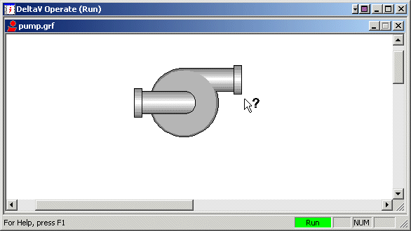
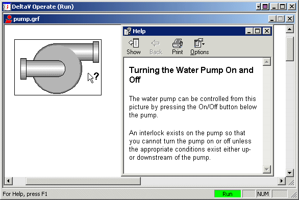

Creating picture-specific help files
Picture-specific Help files are an efficient means of bringing more information to operators electronically without taking up valuable display space. This section describes how to add your own context-sensitive Help files to pictures.
There are several reasons why you might want to create a picture-specific Help file. For example, you may want to provide operators with concise answers to the following questions:
What piece of equipment does this object represent?
Where is this equipment located?
What does this equipment control?
Who is the manufacturer of this equipment?
What are the Standard Operating Procedures (SOPs) for this picture?
In general, if you develop pictures that need to provide operators with equipment-specific information or sets of instructions, you should consider creating picture-specific Help files. For example, let's say you are developing a picture that contains a pump. You can design the picture so that when operators click the pump and press <Shift><F1>, they receive a pop-up with information about the pump's manufacturer, voltage, amp rating, and horsepower.
Similarly, you can use picture-specific Help to develop training screens for new operators. If you were developing a training screen for the pump picture in the previous example, you could display Help pop-up windows containing such basic information as how to know when the pump is on or off, and when it is operating properly.
What's This? Help
Context-sensitive Help within a picture is in the form of What's This? Help. What's This? Help is a simple but highly useful form of Help that is designed to allow operators to quickly access Help information and return to their work. To get Help on an object within a picture, an operator essentially points at the object and queries it for a brief explanation.
In the following example, an operator has pressed <Shift><F1> while in a picture. The mouse cursor changes to the What's This? Help pointer.

While in What's This? Help mode, operators can click any object in the picture (or even the picture itself) for a Help pop-up window on that object.

What's This? Help Design
A What's This? Help file is a compiled file that consists of three source files: a project file, a topic file, and a map file. The Help project (HHP) file contains the Help file's project options, such as the source files to include and compile, the name of the Help file, and so forth. The topic file is an HTML (HyperText Markup Language) file that contains a single topic, which displays in a pop-up window when you invoke What's This? Help. Using any text or HTML editor, you can create HTML files. Knowledge of proper HTML tagging is advised. There are many editors that can assist you in properly creating and tagging your text. The map file is a header file (.h or .hm) that creates an association between the object that you want to provide Help for and the HTML filenames. This information can also be stored in the HHP file in the MAP section, however, it is generally accepted practice to create a separate header file
What's This? Help is not difficult to create, since you only have to specify a couple of Help project options in order to build a useful context-sensitive Help file. However, if you are interested in building more complex, robust Help systems, refer to the HTMLHELP.CHM Help file located in the DeltaV Operate iFIX Base path.